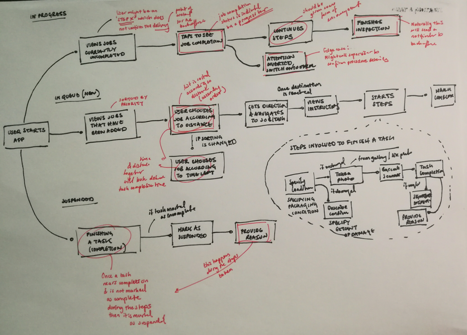

Findings
We found out through interviews with both field workers and the backoffice, that sometimes tasks were too ill-informed to be fully completed or even comprehended. This was true for both sides of the coin, as field workers sometimes didn’t have enough information or might have missed a step when marking a job as completed.
Had enough of me talking? Well I really like to go into depth, but if you don’t feel like reading the rest of this it’s cool. Let’s go
see the good stuff shall we?.
This led to backoffice staff misperceiving whether a task had been completed or not, having to make calls which as a result made them less productive and also less likely to be responsive to emergency calls.
Naturally this back and forth resulted in a growing frustration which we had to tend to. This problem is important to solve because if a workforce is not productive, then not only may there be considerable revenue decrease from the business end, but business customers might also opt to switch supplier.

This may look chatoic, but trust me this was controlled chaos. By referring to this user flow for task completion we knew where our focus had to go and what glaring painpoints we had to immediately address.